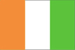
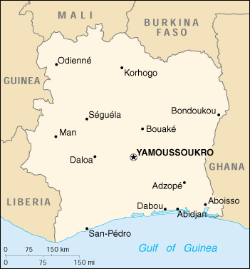

{kind=link}


| Cote d'Ivoire |  |
|
|  | |
| Introduction |
Background: Close ties to France since independence in 1960, diversification of agriculture for export, and encouragement of foreign investment have made Cote d'Ivoire the most prosperous of the tropical African states. About 20% of the population are workers from neighboring countries. On 25 December 1999, a military coup - the first ever in Cote d'Ivoire's history - overthrew the government. The new regime has promised to return the country to democratic rule in 2000.
| Geography |
Location: Western Africa, bordering the North Atlantic Ocean, between Ghana and Liberia
Geographic coordinates: 8 00 N, 5 00 W
Map references: Africa
Area:
total:
322,460 sq km
land:
318,000 sq km
water:
4,460 sq km
Area - comparative: slightly larger than New Mexico
Land boundaries:
total:
3,110 km
border countries:
Burkina Faso 584 km, Ghana 668 km, Guinea 610 km, Liberia 716 km, Mali 532 km
Coastline: 515 km
Maritime claims:
continental shelf:
200 nm
exclusive economic zone:
200 nm
territorial sea:
12 nm
Climate: tropical along coast, semiarid in far north; three seasons - warm and dry (November to March), hot and dry (March to May), hot and wet (June to October)
Terrain: mostly flat to undulating plains; mountains in northwest
Elevation extremes:
lowest point:
Gulf of Guinea 0 m
highest point:
Mont Nimba 1,752 m
Natural resources: petroleum, diamonds, manganese, iron ore, cobalt, bauxite, copper, hydropower
Land use:
arable land:
8%
permanent crops:
4%
permanent pastures:
41%
forests and woodland:
22%
other:
25% (1993 est.)
Irrigated land: 680 sq km (1993 est.)
Natural hazards: coast has heavy surf and no natural harbors; during the rainy season torrential flooding is possible
Environment - current issues: deforestation (most of the country's forests - once the largest in West Africa - have been cleared by the timber industry); water pollution from sewage and industrial and agricultural effluents
Environment - international agreements:
party to:
Biodiversity, Climate Change, Desertification, Endangered Species, Hazardous Wastes, Law of the Sea, Marine Dumping, Nuclear Test Ban, Ozone Layer Protection, Ship Pollution, Tropical Timber 83, Tropical Timber 94, Wetlands
signed, but not ratified:
none of the selected agreements
| People |
Population:
15,980,950
note:
estimates for this country explicitly take into account the effects of excess mortality due to AIDS; this can result in lower life expectancy, higher infant mortality and death rates, lower population and growth rates, and changes in the distribution of population by age and sex than would otherwise be expected (July 2000 est.)
Age structure:
0-14 years:
46.45% (male 3,726,388; female 3,696,462)
15-64 years:
51.36% (male 4,222,333; female 3,985,249)
65 years and over:
2.19% (male 175,606; female 174,912) (2000 est.)
Population growth rate: 2.58% (2000 est.)
Birth rate: 40.78 births/1,000 population (2000 est.)
Death rate: 16.57 deaths/1,000 population (2000 est.)
Net migration rate:
1.6 migrant(s)/1,000 population (2000 est.)
note:
after Liberia's civil war started in 1990, more than 350,000 refugees fled to Cote d'Ivoire; by the end of 1999 all Liberian refugees were assumed to have returned; the 2000 rate reflects labor in migration
Sex ratio:
at birth:
1.03 male(s)/female
under 15 years:
1.01 male(s)/female
15-64 years:
1.06 male(s)/female
65 years and over:
1 male(s)/female
total population:
1.03 male(s)/female (2000 est.)
Infant mortality rate: 95.06 deaths/1,000 live births (2000 est.)
Life expectancy at birth:
total population:
45.15 years
male:
43.72 years
female:
46.63 years (2000 est.)
Total fertility rate: 5.8 children born/woman (2000 est.)
Nationality:
noun:
Ivorian(s)
adjective:
Ivorian
Ethnic groups: Baoule 23%, Bete 18%, Senoufou 15%, Malinke 11%, Agni, Africans from other countries (mostly Burkinabe and Malians, about 3 million), non-Africans 130,000 to 330,000 (French 30,000 and Lebanese 100,000 to 300,000)
Religions: Muslim 60%, Christian 22%, indigenous 18% (some of these are also numbered among the Christians and Muslims)
Languages: French (official), 60 native dialects with Dioula the most widely spoken
Literacy:
definition:
age 15 and over can read and write
total population:
48.5%
male:
57%
female:
40%
| Government |
Country name:
conventional long form:
Republic of Cote d'Ivoire
conventional short form:
Cote d'Ivoire
local long form:
Republique de Cote d'Ivoire
local short form:
Cote d'Ivoire
former:
Ivory Coast
Data code: IV
Government type: republic; multiparty presidential regime established 1960
Capital:
Yamoussoukro
note:
although Yamoussoukro has been the capital since 1983, Abidjan remains the administrative center; the US, like other countries, maintains its Embassy in Abidjan
Administrative divisions:
50 departments (departements, singular - departement); Abengourou, Abidjan, Aboisso, Adzope, Agboville, Agnibilekrou, Bangolo, Beoumi, Biankouma, Bondoukou, Bongouanou, Bouafle, Bouake, Bouna, Boundiali, Dabakala, Daloa, Danane, Daoukro, Dimbokro, Divo, Duekoue, Ferkessedougou, Gagnoa, Grand-Lahou, Guiglo, Issia, Katiola, Korhogo, Lakota, Man, Mankono, Mbahiakro, Odienne, Oume, Sakassou, San-Pedro, Sassandra, Seguela, Sinfra, Soubre, Tabou, Tanda, Tingrela, Tiassale, Touba, Toumodi, Vavoua, Yamoussoukro, Zuenoula
note:
Cote d'Ivoire may have a new administrative structure consisting of 58 departments; the following additional departments have been reported but not yet confirmed by the US Board on Geographic Names (BGN); Adiake', Ale'pe', Dabon, Grand Bassam, Jacqueville, Tiebissou, Toulepleu, Bocanda
Independence: 7 August (1960) (from France)
National holiday: National Day, 7 August
Constitution: 3 November 1960; has been amended numerous times, last time July 1998
Legal system: based on French civil law system and customary law; judicial review in the Constitutional Chamber of the Supreme Court; has not accepted compulsory ICJ jurisdiction
Suffrage: 21 years of age; universal
Executive branch:
chief of state:
Gen. Robert GUEI (since 25 December 1999); note - took power following a military coup against the government of former President Henri Konan BEDIE; president is both chief of state and head of government
head of government:
Gen. Robert GUEI (since 25 December 1999); note - took power following a military coup against the government of former President Henri Konan BEDIE; president is both chief of state and head of government
cabinet:
Council of Ministers appointed by the president
elections:
prior to the coup, president elected by popular vote for a five-year term; election last held 22 October 1995 (next was scheduled to be held by October 2000); prime minister appointed by the president
election results:
results of the last election prior to the coup were: Henri Konan BEDIE elected president; percent of vote - Henri Konan BEDIE 95.25%
Legislative branch:
unicameral National Assembly or Assemblee Nationale (175 seats; members are elected by direct popular vote to serve five-year terms)
elections:
elections last held 27 November 1995 (next to be held NA)
election results:
percent of vote by party - NA; seats by party - PDCI 150, RDR 13, FPI 12
note:
a Senate will be created in the next election
Judicial branch: Supreme Court (Cour Supreme)
Political parties and leaders: Democratic Party of Cote d'Ivoire or PDCI [Jean Konan BANNY, acting head]; Ivorian Popular Front or FPI [Laurent GBAGBO]; Ivorian Worker's Party or PIT [Francis WODIE]; Rally of the Republicans or RDR [Henriette DAGRI-DIABATE]; over 20 smaller parties
International organization participation: ACP, AfDB, CCC, ECA, ECOWAS, Entente, FAO, FZ, G-24, G-77, IAEA, IBRD, ICAO, ICC, ICFTU, ICRM, IDA, IFAD, IFC, IFRCS, ILO, IMF, IMO, Intelsat, Interpol, IOC, ISO (correspondent), ITU, NAM, OAU, OPCW, UN, UNCTAD, UNESCO, UNIDO, UPU, WADB, WADB (regional), WAEMU, WCL, WFTU, WHO, WIPO, WMO, WToO, WTrO
Diplomatic representation in the US:
chief of mission:
Ambassador Koffi Moise KOUMOUE-KOFFI
chancery:
3421 Massachusetts Avenue NW, Washington, DC 20007
telephone:
[1] (202) 797-0300
Diplomatic representation from the US:
chief of mission:
Ambassador George MU
embassy:
5 Rue Jesse Owens, Abidjan
mailing address:
01 B. P. 1712, Abidjan
telephone:
[225] 21 09 79, 21 46 72
FAX:
[225] 22 32 59
Flag description: three equal vertical bands of orange (hoist side), white, and green; similar to the flag of Ireland, which is longer and has the colors reversed - green (hoist side), white, and orange; also similar to the flag of Italy, which is green (hoist side), white, and red; design was based on the flag of France
| Economy |
Economy - overview: Cote d'Ivoire is among the world's largest producers and exporters of coffee, cocoa beans, and palm oil. Consequently, the economy is highly sensitive to fluctuations in international prices for these products and to weather conditions. Despite attempts by the government to diversify the economy, it is still largely dependent on agriculture and related activities, which engage roughly 68% of the population. After several years of lagging performance, the Ivorian economy began a comeback in 1994, due to the devaluation of the CFA franc and improved prices for cocoa and coffee, growth in nontraditional primary exports such as pineapples and rubber, limited trade and banking liberalization, offshore oil and gas discoveries, and generous external financing and debt rescheduling by multilateral lenders and France. The 50% devaluation of Franc Zone currencies on 12 January 1994 caused a one-time jump in the inflation rate to 26% in 1994, but the rate fell sharply in 1996-99. Moreover, government adherence to donor-mandated reforms led to a jump in growth to 5% annually in 1996-99. Growth may slow in 2000 because of the difficulty of meeting the conditions of international donors, continued low prices of key exports, and post-coup instability.
GDP: purchasing power parity - $25.7 billion (1999 est.)
GDP - real growth rate: 5% (1999 est.)
GDP - per capita: purchasing power parity - $1,600 (1999 est.)
GDP - composition by sector:
agriculture:
32%
industry:
18%
services:
50% (1998)
Population below poverty line: NA%
Household income or consumption by percentage share:
lowest 10%:
2.8%
highest 10%:
28.5% (1988)
Inflation rate (consumer prices): 2.5% (1999 est.)
Labor force: NA
Unemployment rate: NA%
Budget:
revenues:
$2.3 billion
expenditures:
$2.6 billion, including capital expenditures of $640 million (1997 est.)
Industries: foodstuffs, beverages; wood products, oil refining, automobile assembly, textiles, fertilizer, construction materials, electricity
Industrial production growth rate: 15% (1998 est.)
Electricity - production: 3.36 billion kWh (1998)
Electricity - production by source:
fossil fuel:
35.71%
hydro:
64.29%
nuclear:
0%
other:
0% (1998)
Electricity - consumption: 3.165 billion kWh (1998)
Electricity - exports: 0 kWh (1998)
Electricity - imports: 40 million kWh (1998)
Agriculture - products: coffee, cocoa beans, bananas, palm kernels, corn, rice, manioc (tapioca), sweet potatoes, sugar, cotton, rubber; timber
Exports: $3.9 billion (f.o.b., 1999 est.)
Exports - commodities: cocoa 37%, coffee, tropical woods, petroleum, cotton, bananas, pineapples, palm oil, cotton, fish (1998)
Exports - partners: France 17%, Netherlands 12%, US 9%, Italy 6% (1998)
Imports: $2.6 billion (f.o.b., 1999 est.)
Imports - commodities: food, consumer goods; capital goods, fuel, transport equipment
Imports - partners: France 29%, US 5%, Italy 5%, Germany 5% (1998)
Debt - external: $16.8 billion (1998 est.)
Economic aid - recipient: ODA, $1 billion (1996 est.)
Currency: 1 Communaute Financiere Africaine franc (CFAF) = 100 centimes
Exchange rates:
CFA francs (CFAF) per US$1 - 647.25 (January 2000), 615.70 (1999), 589.95 (1998), 583.67 (1997), 511.55 (1996), 499.15 (1995)
note:
since 1 January 1999, the CFAF is pegged to the euro at a rate of 655.957 CFA francs per euro
Fiscal year: calendar year
| Communications |
Telephones - main lines in use: 182,000 (1998)
Telephones - mobile cellular: more than 60,000 (December 1998)
Telephone system:
well-developed by African standards but operating well below capacity
domestic:
open-wire lines and microwave radio relay; 90% digitalized
international:
satellite earth stations - 2 Intelsat (1 Atlantic Ocean and 1 Indian Ocean); 2 coaxial submarine cables (June 1999)
Radio broadcast stations: AM 2, FM 8, shortwave 3 (1998)
Radios: 2.26 million (1997)
Television broadcast stations: 14 (1999)
Televisions: 900,000 (1997)
Internet Service Providers (ISPs): NA
| Transportation |
Railways:
total:
660 km
narrow gauge:
660 km 1.000-meter gauge; 25 km double track (1995 est.)
Highways:
total:
50,400 km
paved:
4,889 km
unpaved:
45,511 km (1996 est.)
Waterways: 980 km navigable rivers, canals, and numerous coastal lagoons
Ports and harbors: Abidjan, Aboisso, Dabou, San-Pedro
Merchant marine:
total:
1 ship (1,000 GRT or over) totaling 1,200 GRT/1,500 DWT
ships by type:
petroleum tanker 1 (1999 est.)
Airports: 36 (1999 est.)
Airports - with paved runways:
total:
7
over 3,047 m:
1
2,438 to 3,047 m:
2
1,524 to 2,437 m:
4 (1999 est.)
Airports - with unpaved runways:
total:
29
1,524 to 2,437 m:
8
914 to 1,523 m:
12
under 914 m:
9 (1999 est.)
| Military |
Military branches: Army, Navy, Air Force, paramilitary Gendarmerie, Republican Guard (includes Presidential Guard), Sapeur-Pompier (Military Fire Group)
Military manpower - military age: 18 years of age
Military manpower - availability:
males age 15-49:
3,743,353 (2000 est.)
Military manpower - fit for military service:
males age 15-49:
1,952,882 (2000 est.)
Military manpower - reaching military age annually:
males:
182,936 (2000 est.)
Military expenditures - dollar figure: $94 million (FY96)
Military expenditures - percent of GDP: 1% (FY96)
| Transnational Issues |
Disputes - international: none
Illicit drugs: illicit producer of cannabis, mostly for local consumption; minor transshipment point for Southwest and Southeast Asian heroin to Europe and occasionally to the US, and for Latin American cocaine destined for Europe